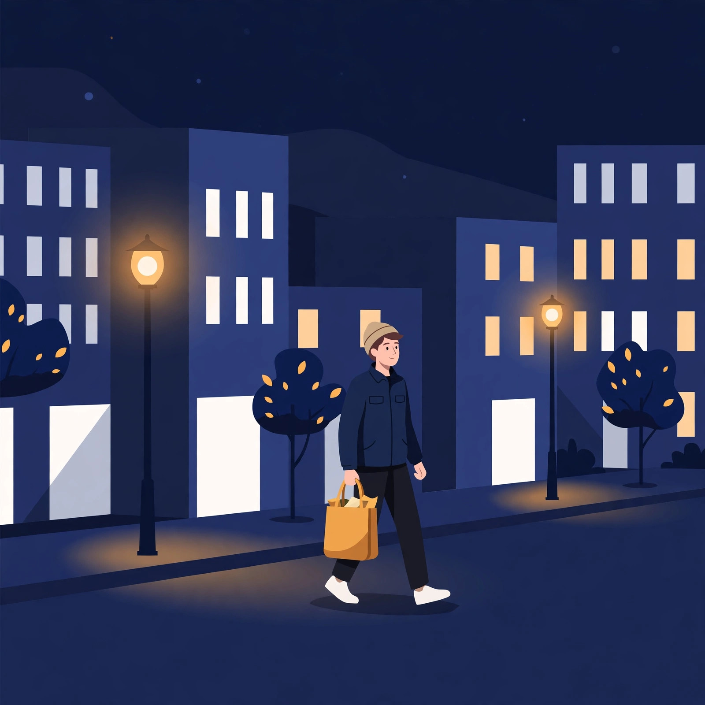

一人暮らしの帰宅チェックと夜道の歩き方
一日のうちで最も無防備になりやすいのが「帰宅の前後」です。玄関に入るまでと、入ってからの数分に手順を決めておくことが、一人暮らしの防犯の核になります。

帰宅前後の確認手順
帰宅時の基本手順は次の通りです。まず建物に近づく前に、エントランス周辺と自分の部屋の窓・ベランダに異常がないか（明かりの状態、窓の開閉、カーテンの様子）を遠目に確認します。次に、玄関前で鍵を探して立ち止まる時間をなくすため、鍵は建物に着く前に手に用意しておきます。ポストを確認するのは玄関を開ける前ではなく、入室後でも構いません。優先順位は「早く中に入って鍵をかけること」です。
入室したら、ドアを閉めて鍵をかけ、ドアチェーンやドアガードまでかけてから荷物を置きます。「ただいま」と声を出す習慣は、一人暮らしでも有効です。室内に誰かがいないかを確認する意味でも、帰宅の声かけは小さくない役割を持ちます。違和感があれば無理に入らず、外に出て管理会社や警察に相談してください。
エントランスとエレベーターでの注意
- オートロックは「自分が入れた人」の責任を持つ。後ろに続く人がいても、開け放しで通さない
- エレベーターは不審な人物と二人きりにならない。乗り合わせを避け、次の便を待つ判断も正解
- エレベーター内では操作パネルの前に立ち、非常ボタンの位置を確認しておく
- 自分の階で降りる様子を、乗り合わせた相手に必要以上に知らせない
- 宅配や訪問者はインターホン越しに対応し、ドアを開ける前に用件と所属を確認する
オートロックは万能ではありません。共連れで入られる前提で、自分の部屋の玄関まわりこそ確実に守る、という考え方が大切です。部屋の前の廊下に私物を置かない、表札や郵便受けの表示で生活パターンを読み取らせない、といった点も見直してください。
夜道の歩き方
経路の選び方
夜道は「最短」より「明るく、人通りがあり、逃げ場のある道」を選びます。同じ帰り道でも、街灯の多い大通り側と暗い裏道側では条件がまったく違います。普段から明るい経路を自分の標準ルートとして決めておき、近道の誘惑で暗い道に入らないことを習慣にしてください。コンビニや交番など、駆け込める場所がどこにあるかも歩きながら把握しておきます。
ながら歩きを避ける
スマートフォンを見ながらの歩行と、両耳を塞ぐイヤホンは、周囲の気配への反応を大きく遅らせます。夜道ではイヤホンを外すか片耳だけにし、スマホは手に持たずポケットやバッグへ。防犯ブザーはバッグの奥ではなく、すぐ手が届く外側の位置に付けます。後ろから足音が近づくなど違和感があれば、立ち止まって相手を先に行かせる、横に寄って距離を取る、といった小さな動きで確認します。
不審な気配を感じたとき
「気のせいかも」と打ち消さず、まず距離を取ることが先です。歩く速さを変えても同じ距離で付いてくる場合は、近くのコンビニなど明るい店内に入り、店員に声をかけて助けを求めてください。必要ならその場から110番通報します。家が近いからと急いで帰宅すると、自宅の場所を知られる上に玄関前で追いつかれる危険があります。自宅前では絶対に決着を付けず、人のいる場所へ向かうのが原則です。
部屋に入ってからの戸締まり習慣
- 入室と同時に施錠＋ドアガード。来客対応でもチェーンは外さない
- 窓とベランダの鍵は帰宅時に一通り目視確認する
- カーテンは夜間、室内の様子が外から分からない状態にする
- 洗濯物の取り込みやゴミ出しなど短時間の外出でも必ず施錠する
- 就寝前にもう一度、玄関と窓の施錠を確認する
戸締まりは「意識」ではなく「順番」で決めると続きます。帰宅→施錠→荷物を置く、という固定の流れを体に覚えさせることが、一人暮らしの防犯の仕上げです。襲われる場面そのものへの備えは 襲われたらどうするか：逃げる判断と距離の作り方 にまとめています。
訪問者と宅配便への対応
帰宅後の安全は、ドアの開け方で決まる部分が大きいです。インターホンが鳴ったら、まずモニターやドアスコープで相手を確認し、チェーンをかけたまま対応します。宅配便は、送り状の宛名と自分の注文内容が一致するかを確認してから受け取ります。注文した覚えのない荷物や、受取人払いを求める荷物は受け取らず、配送会社に持ち帰ってもらって構いません。ガスや水道の点検を名乗る訪問は、事前の告知があるのが通常です。告知のない点検や、身分証の提示を渋る訪問者には、室内に入れず、管理会社に確認の電話を入れてください。「今すぐ確認しないと危険だ」と急がせる言い方は、それ自体が警戒のサインです。置き配を指定できる通販は置き配を標準にし、対面受け取りの機会自体を減らすのも有効な方法です。
引っ越し時に確認したい防犯の条件
一人暮らしの安全は、部屋を決める段階で半分が決まります。物件選びでは、オートロックの有無だけでなく、共用部の明るさ、駐輪場やゴミ置き場の管理状態、夜間の周辺道路の人通りまで見てください。内見は昼だけでなく、可能なら夕方以降にも周辺を歩くと、実際の帰宅環境が分かります。入居後は、前の入居者が合鍵を持っている可能性を考え、シリンダー交換が可能か管理会社に確認するのが基本です。2階以上でもベランダからの侵入は起こり得るため、階数だけで安心しないことも大切です。住まいの構造面の点検は 空き巣はどこから入る？侵入経路と窓・玄関の対策 が参考になります。
※PR・広告を含みます
道具の紹介
この記事の手順で検討されることの多い道具の検索入口です。価格や仕様は販売ページで確認してください。